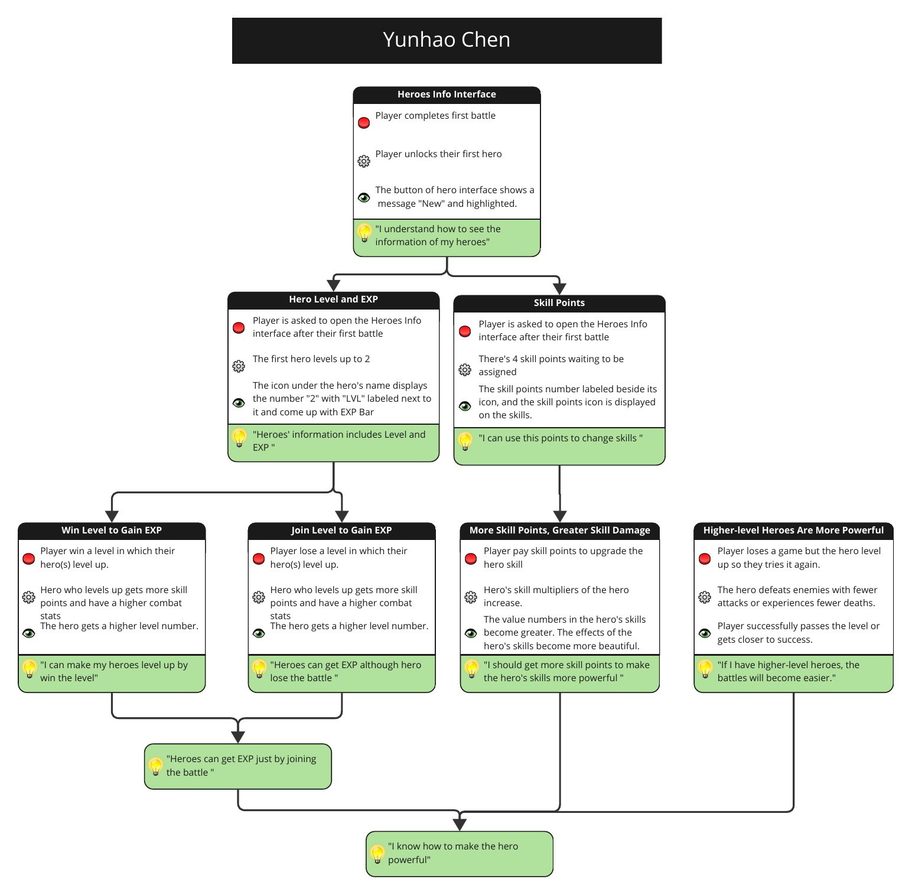

Kingdom Rush 5: Progression Redesign · Design Document
A course assignment that uses skill atoms to break down how players gradually learn hero progression in the original Kingdom Rush 5. Each skill atom has four steps: the player's action, the system's simulation, the feedback, and the understanding the player gains from it. Earlier understanding is the basis for later understanding, and it all adds up to "I know how to make the hero powerful".

| Skill atom | Player action | System simulation | Feedback | Player understanding |
|---|---|---|---|---|
| Heroes Info Interface | Player completes the first battle | Player unlocks their first hero | The button of the hero interface shows the message "New" and is highlighted | "I understand how to see the information of my heroes" |
| Hero Level and EXP | Player is asked to open the Heroes Info interface after their first battle | The first hero levels up to 2 | The icon under the hero's name displays the number "2" with "LVL" next to it, and an EXP bar appears | "Heroes' information includes Level and EXP" |
| Skill Points | Player is asked to open the Heroes Info interface after their first battle | There are 4 skill points waiting to be assigned | The number of skill points is shown beside its icon, and the skill point icon is displayed on the skills | "I can use these points to change skills" |
| Win Level to Gain EXP | Player wins a level in which their hero levels up | A hero who levels up gets more skill points and higher combat stats | The hero gets a higher level number | "I can make my heroes level up by winning the level" |
| Join Level to Gain EXP | Player loses a level in which their hero levels up | A hero who levels up gets more skill points and higher combat stats | The hero gets a higher level number | "Heroes can get EXP even if they lose the battle" |
| More Skill Points, Greater Skill Damage | Player spends skill points to upgrade the hero's skills | The hero's skill multipliers increase | The numbers in the hero's skills become greater, and the skill effects become more beautiful | "I should get more skill points to make the hero's skills more powerful" |
| Higher-level Heroes Are More Powerful | Player loses a game, but the hero levels up, so they try again | The hero defeats enemies with fewer attacks or dies fewer times | Player passes the level or gets closer to success | "If I have higher-level heroes, the battles will become easier" |